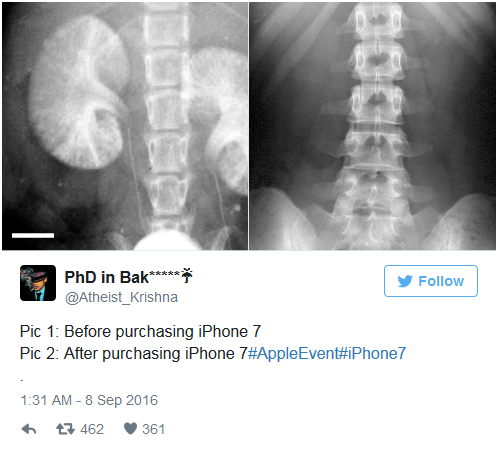
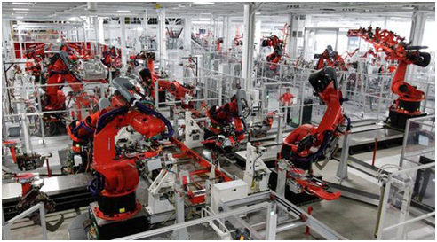
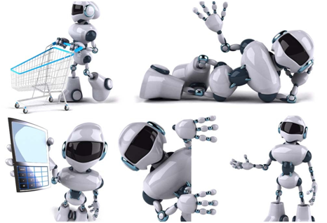
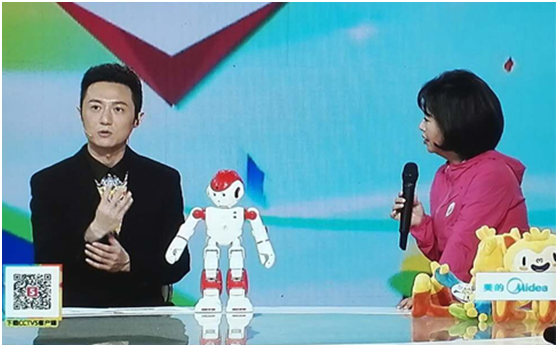

千呼万唤使出来，北京时间9月8号凌晨1点，苹果在旧金山比尔•格雷厄姆市政礼堂举行秋季新品发布会，如期带来了两款iPhone新机以及一款AppleWatch。无线耳机AirPods给大家带来的惊（jing）喜（xia）在短短的几天时间里，引发国内外网友一致吐槽，但无论如何，关于AirPods的脑洞再大也抵挡不住果（tu）粉（hao）们的购买热情。
为了应对国内苹果手机的需求，保证iPhone7的产量，有爆料称富士康早已计划建立起一支4万的机器部队用于中国大陆的组装工作，由富士康自行研发的Foxbot机器人也将以年产量一万台的速度部署至工厂，这条由机器人组成的流水线将24小时运行投入生产。
中国制造转型中国智造
其实早在开始组装iPhone 6的时候，富士康就曾宣布引入一条1万机器人组成的生产线，以保证订单量按时完成。近年来随着劳动力成本的不断增大，工业领域使用机器人替代劳动力的现象已经非常普遍。在制造领域，工业机器人在提高制造装配精准度、提高生产效率并降低生产成本等方面优势明显。
工业4.0时代
从中国制造成功转型到中国智造，不得不提的就是工业4.0时代的到来，以及人工智能技术的发展，给人们的生产生活带来了巨大的变化。
2013年4月，德国政府在汉诺威工业博览会上正式推出工业4.0战略。简单地说，如果将工业1.0定义为蒸汽时代，2.0是电气时代，3.0是自动化时代，那么工业4.0就是网络化和智能化的时代。中国作为全球制造业中心，在2015年规划发布《中国制造2025》战略，推动移动互联网、云计算、大数据、物联网等与现代制造业结合发展。
大环境下制造业对机器人的需求迎来大幅增长，机器人市场的前景也一篇大好。但同时新的工业4.0时代的到来，也对工业机器人提出了更新的要求，面向未来的新一代机器人必将是能够符合工业4.0需求的，机器人实现更好的互联要有更强大的通信能力，机器人与云计算的结合将是未来的一大趋势，同时，和其他行业的交叉和融合发展将极大地推动机器人产品的智能化、集约化、网络化。
强强联合，构建智能机器人新生态
在今年里约奥运会期间，深圳优必选研发的机器人Alpha2出镜了央视《相约里约》栏目成为了首位奥运栏目机器主持人，它和主持人一起播报奥运赛事、与主持人亲密互动等，可谓是大出风头。
小机器人如此智能离不开优必选对智能机器人生态的构建。除了强大的硬件基础外，优必选还在Alpha2中应用了业内领先的操作系统、语音识别、实时视频传输等软件模块，使其同时具备了智能、可交互和可扩展的特性。其中实时视频传输模块正是由国内领先的视频运营服务商——众云视频团队提供技术支持。
众云视频是南京云恩通讯科技运营的物联网领域视频运营服务商，其智能机器人一站式方案包含稳定可靠的远程视频实时观看、双向音视频、文件传输、云端存储、智能报警等功能。同时也为智能机器人方案商提供iOS/Android手机端APP定制服务。两家公司之间的合作，众云视频为优必选提供的是实时视频传输技术模块，将能够保证其机器人完美实现视频分析和传输。
在这个被称为工业4.0的新时代里，机器人技术的发展前景正发生着迅速的变化，随着与物联网和智能制造之间的联系不断加深，技术之间的合作融合才能提高生产效率，增强竞争实力。
原创文章转载请注明：www.zvcloud.com